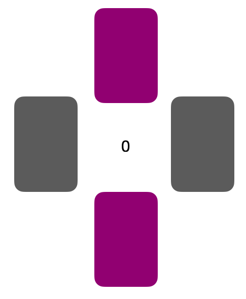

<!DOCTYPE html>
<html>
<head>
  <meta charset="utf-8/">
  <title>Gamble Task</title>
  <script src="jspsych-6.0.5/jspsych.js"></script>
  <script src="jspsych-6.0.5/plugins/jspsych-instructions.js"></script>
  <script src="jspsych-6.0.5/plugins/jspsych-html-keyboard-response.js"></script>
  <script src="jspsych-6.0.5/plugins/jspsych-survey-multi-choice.js"></script>
  <script src="jspsych-6.0.5/plugins/jspsych-categorize-html.js"></script>
  <script src="jspsych-6.0.5/plugins/jspsych-survey-text-beta-6.1.js"></script>
  <script src="jspsych-6.0.5/plugins/jspsych-audio-keyboard-response.js"></script>
  <script src="UPPSP.js"></script>
  <script src="jspsych-6.0.5/plugins/jspsych-survey-likert.js"></script>
  <script src="jspsych-6.0.5/plugins/jspsych-fullscreen.js"></script>
  <script src="jspsych-6.0.5/plugins/jspsych-html-button-response.js"></script>
  <script src="jspsych-6.0.5/plugins/jspsych-call-function.js"></script>
  <link href="jspsych-6.0.5/css/jspsych.css" rel="stylesheet" type="text/css"></link>
</head>
<body></body>
<script>

// create timeline
var timeline = [];

// saved on server? 
if (document.location.host) {
  online = true;
} else {
  online = false;
};

// subject-number

var prolific = {
  type: 'survey-text',
  questions: [{prompt: "please turn off music, cell phone and other devices that might be distracting. Enter your subject number below: ", required: true}],
  on_finish: function(data) {
    var responses = JSON.parse(data.responses);
    var profilic_ID = responses.Q0;
    jsPsych.data.addproperties({
      prolific_ID: prolific_ID
    })
  }
};

timeline.push(profilic);

// fullscreen mode
var fullscreen_mode = {
  type: 'fullscreen',
  fullscreen_mode: true
};

timeline.push (fullscreen_mode)

// participants age
var age = {
  type: 'survey-text',
  questions: [{
    prompt: "How old are you?",
    required: true
  },],
  on_finish: function(data) {
    var responses = JSON.parse(data.responses);
    var code = responses.Q0;
    jsPsych.data.addproperties({
      age: code
    });
  }
};

// participants gender
var gender = {
  type: 'survey-multi-choice',
  questions: [{
    prompt:"Select your gender",
    options:["male","female","X","I don't want to say"],
    required: true
  },],
  on_finish: function(data) {
    var responses = JSON.parse(data.responses);
    var code = responses.Q0;
    jsPsych.data.addproperties({
      gender: code
    });
  }
};

// participants nationality
var gender = {
  type: 'survey-text',
  questions: [{
    prompt:"What's your nationality?",
    required: true
  },],
  on_finish: function(data) {
    var responses = JSON.parse(data.responses);
    var code = responses.Q0;
    jsPsych.data.addproperties({
      nationality: code
    });
  }
};

timeline.push(age, gender, nationality)

var instruction = {
  type: 'instructions',
  pages: [
    '</img>',
    '</img>'
  ]
};

timeline.push(instruction)

// create feelings question
var feelings = {
  type: 'survey-likert',
  questions: [{
    prompt: "How are you feeling at this moment?",
    labels: ["Bad", "Somewhat bad", "Somewhat good", "Good"],
    required: true,
  }, ],
  on_finish: function(data) {
    data.reverse = 0;
    data.factor = "Feelings";
    data.resp = get_resp(data, data.reverse);
  }
}

timeline.push(feelings)

// button to start the audio
var before_audio = {
  type: 'html-button-response',
  stimulus: 'Click to start',
  choices: ['OK']
};

// display positive audio stimuli
var pos_audio = null;

var start_pos_audio = {
  type: 'call-function',
  func: function(){
    pos_audio = new Audio();
    pos_audio.src = "audio/positive-audio.mp3";
    pos_audio.play();
  }
}

// display negative audio
var neg_audio = null;

var start_neg_audio = {
  type: 'call-function',
  func: function(){
    neg_audio = new Audio();
    neg_audio.src = "audio/negative-audio.mp3";
    neg_audio.play();
  }
}

var valence = {
  if (profilic_ID == even){
    return pos_audio,
  } else {
    return neg_audio,
  }
}

timeline.push(valence)


// create factorial design
var factors = {
  amountPure: [5,25,50],
  outcome:['nonGamble', 'gambleWin', 'gambleLoss'],
  color: ['yellow','green','blue','orange']
};

var full_design = jsPsych.randomization.factorial(factors,8);

// display stimuli depending on the design
for (var i = 0; i < full_design.length; i++) {
  if (full_design[i].outcome == 'nonGamble') {
    full_design[i].promptGamble = 0;
    full_design[i].amount = 0;
    full_design[i].image = "</img>";
    // + 5 condition
  } else if (full_design[i].outcome == 'gambleWin' && full_design[i].color == 'yellow' && full_design[i].amountPure == 5) {
    full_design[i].amount = '+' + full_design[i].amountPure;
    full_design[i].image = "</img>";
  } else if (full_design[i].outcome == 'gambleWin' && full_design[i].color == 'green' && full_design[i].amountPure == 5) {
    full_design[i].amount = '+' + full_design[i].amountPure;
    full_design[i].image = "</img>";
  } else if (full_design[i].outcome == 'gambleWin' && full_design[i].color == 'blue' && full_design[i].amountPure == 5) {
    full_design[i].amount = '+' + full_design[i].amountPure;
    full_design[i].image = "</img>";
  } else if (full_design[i].outcome == 'gambleWin' && full_design[i].color == 'orange' && full_design[i].amountPure == 5) {
    full_design[i].amount = '+' + full_design[i].amountPure;
    full_design[i].image = "</img>";

  // + 25 condition
  } else if (full_design[i].outcome == 'gambleWin' && full_design[i].color == 'yellow' && full_design[i].amountPure == 25) {
    full_design[i].amount = '+' + full_design[i].amountPure;
    full_design[i].image = "</img>";
  } else if (full_design[i].outcome == 'gambleWin' && full_design[i].color == 'green' && full_design[i].amountPure == 25) {
    full_design[i].amount = '+' + full_design[i].amountPure;
    full_design[i].image = "</img>";
  } else if (full_design[i].outcome == 'gambleWin' && full_design[i].color == 'blue' && full_design[i].amountPure == 25) {
    full_design[i].amount = '+' + full_design[i].amountPure;
    full_design[i].image = "</img>";
  } else if (full_design[i].outcome == 'gambleWin' && full_design[i].color == 'orange' && full_design[i].amountPure == 25) {
    full_design[i].amount = '+' + full_design[i].amountPure;
    full_design[i].image = "</img>";

    // + 50 condition
  } else if (full_design[i].outcome == 'gambleWin' && full_design[i].color == 'yellow' && full_design[i].amountPure == 50) {
    full_design[i].amount = '+' + full_design[i].amountPure;
    full_design[i].image = "</img>";
  } else if (full_design[i].outcome == 'gambleWin' && full_design[i].color == 'green' && full_design[i].amountPure == 50) {
    full_design[i].amount = '+' + full_design[i].amountPure;
    full_design[i].image = "</img>";
  } else if (full_design[i].outcome == 'gambleWin' && full_design[i].color == 'blue' && full_design[i].amountPure == 50) {
    full_design[i].amount = '+' + full_design[i].amountPure;
    full_design[i].image = "</img>";
  } else if (full_design[i].outcome == 'gambleWin' && full_design[i].color == 'orange' && full_design[i].amountPure == 50) {
    full_design[i].amount = '+' + full_design[i].amountPure;
    full_design[i].image = "</img>";

    // - 5 condition
  } else if (full_design[i].outcome == 'gambleLoss' && full_design[i].color == 'yellow' && full_design[i].amountPure == 5) {
    full_design[i].amount = '-' + full_design[i].amountPure;
    full_design[i].image = "</img>";
  } else if (full_design[i].outcome == 'gambleLoss' && full_design[i].color == 'green' && full_design[i].amountPure == 5) {
    full_design[i].amount = '-' + full_design[i].amountPure;
    full_design[i].image = "</img>";
  } else if (full_design[i].outcome == 'gambleLoss' && full_design[i].color == 'blue' && full_design[i].amountPure == 5) {
    full_design[i].amount = '-' + full_design[i].amountPure;
    full_design[i].image = "</img>";
  } else if (full_design[i].outcome == 'gambleLoss' && full_design[i].color == 'orange' && full_design[i].amountPure == 5) {
    full_design[i].amount = '-' + full_design[i].amountPure;
    full_design[i].image = "</img>";

    // - 25 condition
  } else if (full_design[i].outcome == 'gambleLoss' && full_design[i].color == 'yellow' && full_design[i].amountPure == 25) {
    full_design[i].amount = '-' + full_design[i].amountPure;
    full_design[i].image = "</img>";
  } else if (full_design[i].outcome == 'gambleLoss' && full_design[i].color == 'green' && full_design[i].amountPure == 25) {
    full_design[i].amount = '-' + full_design[i].amountPure;
    full_design[i].image = "</img>";
  } else if (full_design[i].outcome == 'gambleLoss' && full_design[i].color == 'blue' && full_design[i].amountPure == 25) {
    full_design[i].amount = '-' + full_design[i].amountPure;
    full_design[i].image = "</img>";
  } else if (full_design[i].outcome == 'gambleLoss' && full_design[i].color == 'orange' && full_design[i].amountPure == 25) {
    full_design[i].amount = '-' + full_design[i].amountPure;
    full_design[i].image = "</img>";

    // - 50 condition
  } else if (full_design[i].outcome == 'gambleLoss' && full_design[i].color == 'yellow' && full_design[i].amountPure == 50) {
    full_design[i].amount = '-' + full_design[i].amountPure;
    full_design[i].image = "</img>";
  } else if (full_design[i].outcome == 'gambleLoss' && full_design[i].color == 'green' && full_design[i].amountPure == 50) {
    full_design[i].amount = '-' + full_design[i].amountPure;
    full_design[i].image = "</img>";
  } else if (full_design[i].outcome == 'gambleLoss' && full_design[i].color == 'blue' && full_design[i].amountPure == 50) {
    full_design[i].amount = '-' + full_design[i].amountPure;
    full_design[i].image = "</img>";
  } else if (full_design[i].outcome == 'gambleLoss' && full_design[i].color == 'orange' && full_design[i].amountPure == 50) {
    full_design[i].amount = '-' + full_design[i].amountPure;
    full_design[i].image = "</img>";
  }
};

var start = {
  type:'html-keyboard-response',
  stimulus: 'Press a key to start the next gamble',
  choices: ['leftarrow', 'rightarrow', 'downarrow', 'uparrow'],
};

// display cards
var cards = {
  type: "html-keyboard-response",
  stimulus: function(){return jsPsych.timelineVariable('image', true)},
  choices: function() {
    if (jsPsych.timelineVariable('outcome', true)== 'nonGamble') {
      return ['downarrow', 'uparrow'];
    } else {
      return ['leftarrow', 'rightarrow'];
    }
  },
  on_finish: function(data) {
    var last_rt = jsPsych.data.get().last(2).values()[0];
    data.startRT = last_rt.rt;
    startRT = data.startRT;
    console.log(startRT);
    responseTime = data.rt;
    console.log(responseTime);
    data.outcome = jsPsych.timelineVariable('outcome', true);
    data.amount = jsPsych.timelineVariable('amountPure', true);
    data.trial_type = 'task';
    data_trial_number = (data.trial_index-5)/3;
  }
};

var feedback = {
  type: "html-keyboard-response",
  stimulus: function(){
    return jsPsych.timelineVariable('amount', true)},
    trial_duration: 1000,
    choices: jsPsych.NO_KEYS,
  };
  var trial_procedure = {
    timeline: [start, cards, feedback],
    timeline_variables: full_design,
  };
  timeline.push(trial_procedure)

  // create block feedback 
  var block_feedback = {
    type: 'html-keyboard-response',
    stimulus: 'You won 200 points',
  };
  timeline.push(block_feedback)

  // Audio + vragenlijst toevoegen!!!
  var block_procedure = {
    timeline: [consent, age, gender, nationality, instruction, trial_procedure, block_feedback],
};

// UPPS-P questionnaire
var instructions_UPPSP = {
  type: 'instructions',
  pages: [
    "In the last part of this study, you will see a number of statements that describe ways in which" +
    "people think and act. For each statement, please indicate how much you agree or disagree with the statement by selecting Agree Strongly," +
    "Agree somewhat, Disagree Somewhat or Disagree Strongly. Be sure to indicate your agreement or disagreement for every statement." +
    "Press the arrow key to start the task."
  ],
  key_forward: 'rightarrow',
  on_start: function() {
    document.body.style.cursor = 'auto';
  }
};

timeline.push(instructions_UPPSP);

//show UPPSP questionnaire
timeline.push(...UPPSP_items);

//function that appends data to an existing file (or creates the file if it does not exist)
function appendData(filename,filedata) {
  $.ajax({
    type: 'post',
    cache: false,
    url: 'data-save/save_data_append.php',
    data: {
      filename: filename,
      filedata: filedata
    },
  });
};

var goodbye = {
  type: 'html-keyboard-response',
  stimulus: "<p> Thank you for participating! In this study we want to look at the influence of emotions on impulsive actions." +
    "More specifically, we will look at how fast you started the next trial after a loss versus a win. </p>"
};

timeline.push(goodbye)

//function to add participant info and trial number to data file

//start the experiment and save data
jsPsych.init ({
  timeline: timeline,
  on_data_update: function(data) {
    if(online) {
      var subjID = jsPsych.data.get().last(1).values()[0]['profilic_ID'];
      if (data.trial_index ==1) {
        data_row = 
        "profilic_ID, Age, Gender,Nationality, stimulus, trial_number, outcome, amount, startRT, RT, key_press,resp,factor,color,time_elapsed\n"
        appendData ('CardsData_' + subjID + '.csv', data_row)
      } else if (data.trial_type == 'task'|| data.trial_type == 'survey-likert'){
        data_row = data.prolific_ID + ',' + data.age + ',' + data.gender + ',' + data.nationality + ',' + data.stimulus + ',' + data.trial_number + ',' +
                      data.outcome + ',' + data.amount + ',' +
                      data.startRT + ','  + data.rt + ',' + data.key_press + ',' + data.resp + ',' + data.factor + ',' + data.color + ',' + data.time_elapsed  + '\n'
        appendData('CardsData_'+ subjID +'.csv',data_row)
      }
    }
  },
  on_finish: function(){
    if (!online) {
      jsPsych.data.get().filter({trial_type:'task'|| trial_type = 'survey-likert'}).localSave('csv', 'mydata.csv');
    }
  }
})

</script>
</html>
